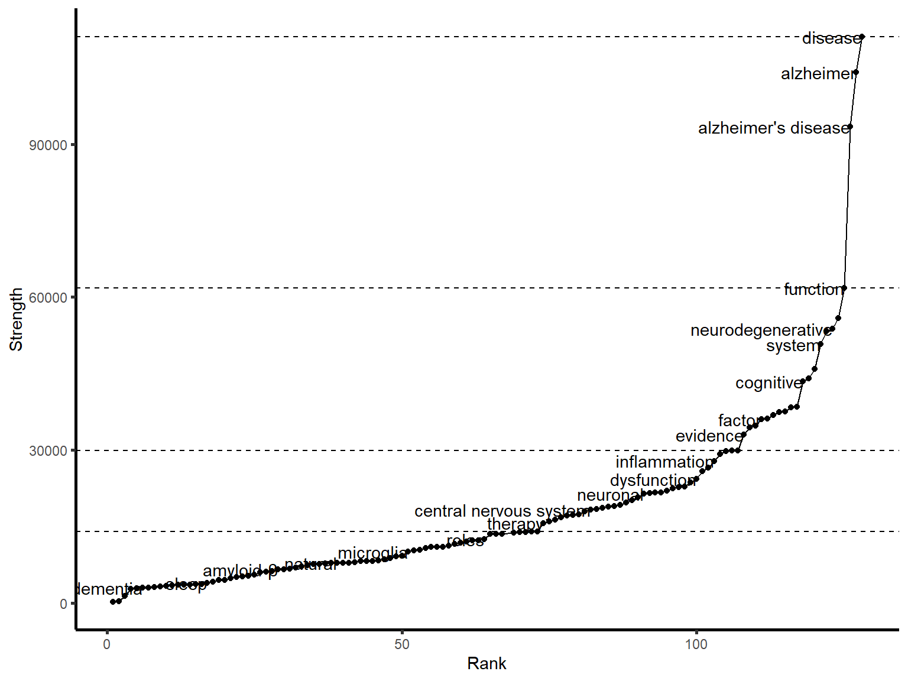
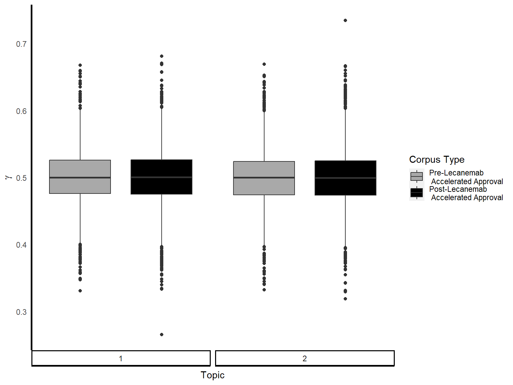
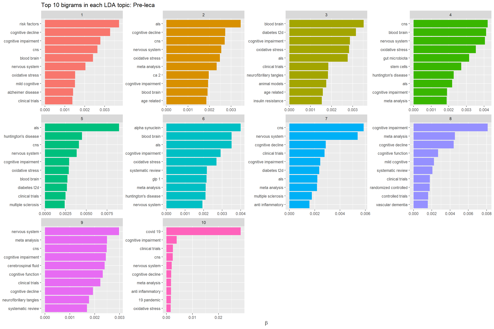
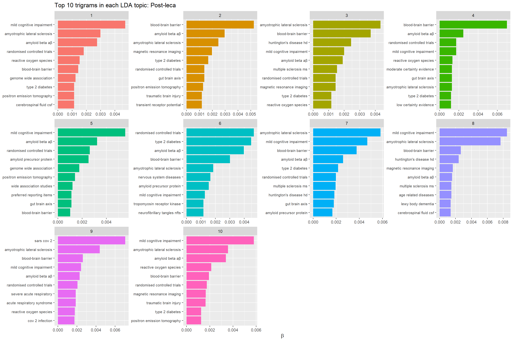

| Criteria: | Filter applied: |
| MeSH term | ‘Alzheimer’s Disease’ |
| Article Type | Books |
| Case Reports | |
| Clinical Study | |
| Clinical Trial | |
| Controlled Clinical Trial | |
| Meta-analysis | |
| Randomised Controlled Trial | |
| Review | |
| Systematic Review | |
| Publication Date | 1st January 2022 to 1st January 2024 inclusive |
| Language | English |
Impact of novel Alzheimer’s disease drug discovery on the research field using text mining and topic models
Abstract
Alzheimer’s disease (AD) is a chronic neurodegenerative disease affecting over 55 million people worldwide. Currently there are no treatments that cure AD, however recently the anti-amyloid immunotherapy lecanemab has been granted accelerated approval by the FDA. Every year thousands of scientific articles are published concerning AD, however it can be time consuming and laborious to disseminate this information into a systematic review whilst highlighting current research. Full abstract text from PubMed for documents containing the MeSH term “Alzheimer’s Disease” were tokenised, cleaned then allocated to either a “pre-leca” or “post-leca” corpus relative to the date of lecanemab accelerated approval, 6th January 2023. Ten-topic latent Diurich Allocation (LDA) models were created for each corpus either using unigrams or bigrams.
Introduction
Alzheimer’s Disease
Alzheimer’s disease (AD) is a chronic neurodegenerative disease and the most common cause of dementia. Affecting over 55 million people worldwide, the predominant symptoms of AD usually manifest after the age of 65 and include cognitive impairment, as well as physical and emotional difficulties (Anon, 2023). These symptoms usually manifest after the physiological changes in the brain develop, therefore scientific understanding and advances in new treatments is important in understanding AD aetiology.
Whilst the underlying mechanisms determining the progression of AD are not fully understood, the accumulation of abnormal protein aggregates including, amyloid-beta plaques and neurofibrillary tangles, are frequently found in the brains of patients with AD (Villemagne et al., 2013) (Iaccarino et al., 2018). This leads to disruptions in neuronal signalling pathways and can result in brain atrophy. Diagnosing AD requires the presence of both amyloid and tau pathologies as well as neuroinflammation, neuronal death and brain atrophy (Garcı́a-Morales et al., 2021).
Treatments for AD
Although there are currently no therapies or interventions that can cure AD, several disease-modifying treatments exist that can alter the course of the disease, alleviate symptoms, and enhance the overall quality of life for patients. A recent comprehensive review by (Huang et al., 2023), identified a shift in clinical trial research, which highlighted more Phase I studies being conducted and more Phase III trials involving anti-amyloid therapies. These trials are involving more patients with early onset AD and mild cognitive impairment (MCI) to help develop preventative therapies. Global estimates for people living with preclinical AD or positive for AD pathology biomarkers were 69 and 315 million, respectively (Gustavsson et al., 2023), therefore increasing research focus on these patient populations is imperative to slow the progression of the disease.
There have recently been two drugs granted approval by the United States Food and Drug Administration (US FDA) which target the pathophysiologies of AD; aducanumab and lecanemab (Center for Drug Evaluation and Research, 2023); (Office of the Commissioner, 2023). These treatments are human monoclonal immunotherapies which aim to target and reduce the beta-amyloid protein aggregates in the brain by binding to its various forms in the amyloid-beta pathway. Furthermore, there are four more anti-amyloid monoclonal antibody treatments which have undergone or are currently in Phase III clinical trials (Cummings et al., 2023). For this study, we will focus on lecanemab, the most recent AD treatment to undergo accelerated approval by the FDA, which was fully approved for treatment in early AD on the 6th July 2023.
Topic Modelling and Text Mining in AD Research
Given the consistent publication of thousands of articles every year concerning AD, focusing on early-stage drug discovery could lead to more research literature and clinical findings being published. Systematic reviews and meta-analyses are time consuming and labour intensive, and pose a significant challenge to updating the current understandings in the research field (Higgins, 2019). Topic modelling, a prominent text mining technique, can find patterns and relationships within natural language data, and could provide an automated and unbiased overview of research text. The most common topic modelling method is Latent Dirichlet Allocation (LDA) which assumes, for unstructured text data like research publication, that each document is made up of a number of topics and that each topic is made up of a collection of words (Blei, Ng and Jordan, 2003). Each LDA topic is represented as a probability of words within a topic and a probability of topics within each document, which each follow a Dirichlet distribution.
In silico topic modelling has been used for various applications relating to AD, including describing the research landscape. (Martinelli, 2022), identifying novel biomarkers (Greco et al., 2012), and drug repurposing (Nian et al., 2022). Martinelli performed a nine-topic LDA model and identified five mechanistic themes, one topic relating to AD diagnosis and three concerning treatments. To the best of my knowledge, no studies have explored the change to the AD research landscape with the emergence of newly approved immunotherapy treatments. To increase the findability and reduce bias when selecting articles, the litsearchr package will help identify the most important terms which we will reference our search terms against (Grames et al., 2019).
Aims and Hypotheses
In this study we aim to comprehensively investigate current research in AD, focusing on the period around the accelerated approval of the AD immunotherapy drug, lecanemab. We hypothesised that major topics in AD research could be categorised into distinct themes by applying LDA topic models to existing literature. Additionally, we hope to determine whether these topics have changed with the emergence of new immunotherapy treatments. This method is justified for the vast quantity of literature being published concerning AD and could be translated into other disease areas to study the impact of novel treatment options. Remaining current with the latest research is crucial for making significant strides in understanding and addressing the complexities of this disease, and finding new ways to treat AD.
Methods
A full summary of the methodology is provided in Appendix 1. All data analysis and visualisations were done in R version 4.3.2 using tidyverse packages (Wickham et al., 2019) unless otherwise stated.
Data Acquisition
Due to accessing constraints, abstracts represent the only document content for this study. Titles, full abstract text, author list, and publication date were obtained from PubMed using the inclusion criteria described in Table 1 and EUTils, accessed through Rismed (Kovalchik, 2021). After excluding publications without abstracts (n = 44), 6155 manuscripts comprised the final dataset (data cut accessed on 10th October 2023). PubMed is a large, online search engine containing over 36 million citations for biomedical literature, and is maintained by the United States National Library of Medicine (NLM) at the National Institutes of Health (NIH). The diversity of entries into the database ensures that the contents are representative and studies are reliable as they are obtained from multiple sources. Entries are assigned Medical Subject Headings (MeSH) which identify health-related terms within each document, therefore classifying articles according to their subject nature which reduces potential interpretive bias.
Data Preprocessing
Abstracts and their metadata were categorised into “pre-leca” or “post-leca” corpuses based on their publication date relative to the date of lecanemab’s accelerated early approval, 6th January 2023. Full abstract text was tokenised into single words using the unnest_tokens function of the tidytext package (Silge and Robinson, 2016). The same function was used for tokenising to bigrams and trigrams, using n = 2 and n = 3 respectively. Stop words from the tidytext package (Silge and Robinson, 2016) combined with personalised words (Table 2) were then removed Figure 1. To prevent the different spellings of the same word or phrase from being counted multiple times, similar words were mapped to the same variable. For example, ‘amyloid β, ‘beta amyloid’, and ‘amyloid aβ’ were all mapped to ‘amyloid beta’.


Data Analysis
litsearchR
To reassure us that the PubMed search query encapsulated all literature, litsearchr package was used to expand the search terms (Grames et al., 2019). Citations from PubMed results using the previous search criteria were read into R. The combined unique keyword and titles, as not all articles have keywords, for each result were collected. To ensure only the most relevant terms were searched, stop words were removed, as previously described, and the minimum frequency of words was set as n = 50 for keywords and n = 75 for the title. A matrix of each word in each article was created and the potential search terms were ranked with create_network and strength (Barrat et al., 2004) from the igraph package (Csardi and Nepusz, 2006). The 80% cutoffs were determined to find only the most important terms to the articles; all others were discarded (Figure 2; Figure 3).


Publication Frequency
Number of abstracts published per month were visualised as well as the frequency of dates of publications for papers containing the AD drug lecanemab and associated terminology were also obtained.
Term Frequency
N-gram Frequency Analysis
After tokenisation, the top 20 most frequent unigrams were determined for each dataset. The top 20 most frequent bigrams and trigrams were also determined due to many unigrams being associated with pairs or triplets of words. For example, “mild cognitive impairment” relates to a neurological condition, whereas the words “mild”, “cognitive” and “impairment” have ambiguous connotations individually. The most frequent bigrams were also visualised as networks.
Term Usage Over Time
The distribution of terms used over 1000 times from the unigram analysis was visualised. Generalised linear model (GLM) was used to determine whether there was a significant change in word usage over the months.
Topic Modelling
A document term matrix (dtm) was constructed for each dataset, indicating each word’s term frequency (tf), which is a measure of how often a word appears in a document. To determine if a statistical model could distinguish between pre-leca and post-leca corpuses, a two-topic Latent Dirich Allocation (LDA) model (Blei, Ng and Jordan, 2003) was applied to the dtm using the topicmodels package (Grün and Hornik, 2011). The per-document-per-topic probabilities (γ) is extracted to show the proportion of words generated in each topic and how often these words appear in either the pre-leca or post-leca corpuses.
Furthermore, two ten-topic LDA models were created, one for each of the pre-leca and post-leca text corpuses, to determine the most frequent topics, where an arbitrary topic number (k) of ten was chosen. The per-topic-per-word probabilities (β) were extracted and the top 10 terms most commonly found in each topic were visualised. As a lot of the most common words appear as bigrams in the text corpuses, the per-topic-per-bigram probabilities with the top 10 most common bigrams were also visualised with two more ten-topic LDA models. In each model the abstracts are considered mixtures of topics and each topic is considered a mixture of words.
Results and Discussion
AD Research Publication are Similar Over Time
This study found 6155 papers that were published between 2022-01-01 and 2023-10-10 that contained the identified terms (?@tbl-inclusion criteria).
The distribution of publication dates for these articles is shown in Figure 4. There were 207 papers published between 01-03-2017 and 31-10-2023 that contained the identified terms.


To determine if a statistical model could distinguish between pre-leca and post-leca corpuses, a two-topic Latent Dirich Allocation (LDA) model (Blei, Ng and Jordan, 2003) was applied to the dtm using the topicmodels package (Grün and Hornik, 2011). The per-document-per-topic probabilities (γ) is extracted to show the proportion of words generated in each topic and how often these words appear in either the pre-leca or post-leca corpuses.

N-gram Analysis
Despite the full abstract dataset not significantly splitting into two distinct topics, we aimed to suggest this was because the language was very similar between the two corpses. We therefore aimed to explore the most common n-grams frequencies. The most frequent unigrams, bigrams and trigrams are shown in Figure 6. ‘Disease’ is the most frequent unigram in both corpuses due to being most frequently associated with ‘neurodegenerative disease’ as well as specifically for ‘Parkinson’s disease’, and ‘Huntington’s disease’ which are common neurodegenerative diseases which are researched as much as AD.


The distribution by month of the top 10 frequent words, as determined from Figure 6, is shown in Figure 7.

As ‘disease’ was the most common unigram, we explored the most frequent bigrams that end in ‘disease’ (Figure 8). We also explored the most common bigrams that begin with ‘neuro’ and those that end in ‘neuro’ to understand the context in which these words are used.
Bigram Networks
Relations of bigram networks are shown in Figure 9.

Topic Modelling
Unigrams
The top 10 unigrams in LDA for pre-leca: and post-leca are shown in Figure 10.
Topic 1: Clinical studies - ‘treatment’, ‘trials’, ‘development’, ‘clinical’
Topic 2: Studies for diagnosis - ‘clinical’, ‘data’, ‘biomarkers’, ‘diagnosis’
Topic 3: Risk factors & symptoms - ‘age’, ‘health’, ‘depression’
Topic 4: Cells - ‘neuroinflammation’, ‘microglia’, ‘signaling’
Topic 5: ? - ‘sleep’, ‘inflammatory’, ‘effects’
Topic 6: Mechanisms ? - ‘mitochondrial’, ‘gut’, ‘stress’, ‘brain’
Topic 7: Genetics - ‘gene’, ‘risk’, ‘common’
Topic 8: Abnormal proteins - ‘tau’, ‘aB’, ‘plaques’, ‘aggregation’, ‘accumulation’, ‘beta’
Topic 9: Study criteria ? - ‘mci’, ‘included’, ‘meta’, ‘cognitive’ - i.e. choosing the correct people for a study is very important to ensure you get the correct findings, especially choosing AD patients with mild vs late MCI vs clinical dementia & AD
Topic 10: Brain - ‘neurological’, ‘neurodegeneration’, ‘blood brain barrier’, ‘system’
The top 10 unigrams in LDA for post-leca:
Topic 1: Study criteria - ‘mci’, ‘patients’, ‘included’, ‘dementia’
Topic 2: Brain - ‘memory’, ‘disorders’, ‘imaging’, ‘neurodegeneration’
Topic 3: ? - ‘covid’, ‘19’, ‘tau’, ‘protein’
Topic 4:
Topic 5: Risk Factors - ‘sleep’, ‘health’, ‘age’, ‘ageing’
Topic 6: Treatments - ‘therapeutics’, ‘effects’, ‘anti’, ‘drugs’, ‘treatment’
Topic 7: Study ? - ‘study’, ‘participants’, ‘clinical’, ‘risk’
Topic 8: Diagnosis - ‘biomarkers’, ‘genetic’, ‘research’, ‘analysis’
Topic 9: Proteins - ‘amyloid’, ‘aB’, ‘tau’, ‘brain’, ‘B’, ‘protein’
Topic 10: Diabetes ? - ‘insulin’, ‘receptor’, ‘diabetes’, ‘1’, ‘2’ - though 1 might be from something else, e.g. ‘1 42’ is a bigram which is a type of amyloid beta peptide 1-40 and 1-42


Bigrams
The top 10 bigrams in topic models for pre- and post- leca corpuses are shown in Figure 11. We removed the bigrams ‘neurodegenerative disease’ and ‘parkinson’s disease’ from the models as they were present in all topics. Additionally we removed ‘amyloid-beta’ from the pre-leca model as this was also present in all topics.
Then most frequent terms:
‘cognitive impairment’ was common to 8/10 pre-leca models and 9/10 post-leca
‘amyloid beta’ was common to 8/10 post-leca models
Unique terms which define each topic:
Themes of topics pre-leca:
Topic 1: Risk factors ? - ‘diabetes t2d’, ‘insulin resistance’, ’
Topic 2:
Topic 3:
Topic 4: “Covid 19” - high beta value
Topic 5:
Topic 6: “Amyloid beta” - high beta value
Topic 7:
Topic 8:
Topic 9:
Topic 10:
Themes of topics post-leca:
Topic 1: neurodegenerative diseases - “huntington’s disease”, “ALS”
Topic 2:
Topic 2:
Topic 2:
Topic 2:
Topic 2:
Topic 2:

Trigrams
The top 10 trigrams in topic models for pre- and post- leca corpuses are shown in Figure 12. We removed the trigrams ‘central nervous system’ and ‘parkingson’s disease pd’ from the models as they were present in all topics and did not provide any additional information.
Themes of topics pre-leca:
Topic 1:
Topic 2:
Topic 3:
Topic 4: Covid (?)
Topic 5:
Topic 6:
Topic 2:
Themes of topics post-leca:
Topic 1:
Topic 2:
Topic 3: “chinese patent medicine”
Topic 4: “inflammatory bowel disease”
Topic 5: “bstructive sleep apnea”
Topic 6:
Topic 7: “glp 1 ras”
Topic 8:
Topic 9: “traditional chinese medicine”
Topic 10: “donepezil patch 27.5”, “patch 27.5 mg”

Discussion
Study Limitations
Due to our search strategy, a lot of papers contain the words ‘Alzheimer’s disease’ may have been mentioned as a collective with other neurodegenerative diseases. Therefore, the unigrams ‘huntington’s disease’, ‘parkinson’s disease’ and ‘amylotropic lateral sclerosis’ are very frequent.
One reason for there not being any statistical significance between the per-document-per-topic probabilities could be due to the time frame used for the analysis not being long enough to account for a change in the research landscape.
Unable to mine keywords included in the full text, so terms only described in the abstract, regardless of whether other phrases are included in the complete article.
Conclusion
The results of this study suggest that the introduction of lecanemab has not had a significant impact on the research landscape of neurodegenerative diseases. The most common topics in the pre-lecanemab corpus were also the most common in the post-lecanemab corpus.
Appendix
| Stop Word |
|---|
| alzheimer’s |
| ad |
| 95 |
| ci |
| including |
Acknowledgements
I would like to thank my supervisor Emma Rand for her constant support and guidance throughout my project. I would also like to dedicate this project to my late granddad Alan Scrimshire who passed away on the 31st March 2023 after fighting a five year battle with Alzheimer’s Disease. I hope this project highlights the complexity of the disease and the vast efforts being undertaken to find a cure.
References
Barrat, A., Barthélemy, M., Pastor-Satorras, R. and Vespignani, A. (2004). The architecture of complex weighted networks. Proc. Natl. Acad. Sci. U. S. A., 101 (11), pp.3747–3752.
Blei, D. M., Ng, A. Y. and Jordan, M. I. (2003). Latent dirichlet allocation. https://www.jmlr.org/papers/volume3/blei03a/blei03a.pdf?ref=https://githubhelp.com.
Center for Drug Evaluation and Research. (2023). FDA’s decision to approve new treatment for alzheimer’s disease. https://www.fda.gov/drugs/our-perspective/fdas-decision-approve-new-treatment-alzheimers-disease; FDA.
Csardi, G. and Nepusz, T. (2006). The igraph software package for complex network research. Complex Systems, p.1695.
Cummings, J., Zhou, Y., Lee, G., Zhong, K., Fonseca, J. and Cheng, F. (2023). Alzheimer’s disease drug development pipeline: 2023. Alzheimers. Dement., 9 (2), p.e12385.
Garcı́a-Morales, V., González-Acedo, A., Melguizo-Rodrı́guez, L., Pardo-Moreno, T., Costela-Ruiz, V. J., Montiel-Troya, M. and Ramos-Rodrı́guez, J. J. (2021). Current understanding of the physiopathology, diagnosis and therapeutic approach to alzheimer’s disease. Biomedicines, 9 (12).
Grames, E. M., Stillman, A. N., Tingley, M. W. and Elphick, C. S. (2019). An automated approach to identifying search terms for systematic reviews using keyword co‐occurrence networks. Methods Ecol. Evol., 10 (10), Wiley., pp.1645–1654.
Greco, I., Day, N., Riddoch-Contreras, J., Reed, J., Soininen, H., Kłoszewska, I., Tsolaki, M., Vellas, B., Spenger, C., Mecocci, P., Wahlund, L.-O., Simmons, A., Barnes, J. and Lovestone, S. (2012). Alzheimer’s disease biomarker discovery using in silico literature mining and clinical validation. J. Transl. Med., 10, p.217.
Grün, B. and Hornik, K. (2011). Topicmodels: An R package for fitting topic models. J. Stat. Softw., 40, pp.1–30.
Gustavsson, A., Norton, N., Fast, T., Frölich, L., Georges, J., Holzapfel, D., Kirabali, T., Krolak-Salmon, P., Rossini, P. M., Ferretti, M. T., Lanman, L., Chadha, A. S. and Flier, W. M. van der. (2023). Global estimates on the number of persons across the alzheimer’s disease continuum. Alzheimers. Dement., 19 (2), pp.658–670.
Higgins, J. P. T. (2019). Cochrane handbook for systematic reviews of interventions, Wiley cochrane series. 2nd ed. Higgins, J. and Thomas, J. (Eds). Hoboken, NJ : Wiley-Blackwell.
Huang, L.-K., Kuan, Y.-C., Lin, H.-W. and Hu, C.-J. (2023). Clinical trials of new drugs for alzheimer disease: A 2020–2023 update. J. Biomed. Sci., 30 (1), p.83.
Iaccarino, L., Tammewar, G., Ayakta, N., Baker, S. L., Bejanin, A., Boxer, A. L., Gorno-Tempini, M. L., Janabi, M., Kramer, J. H., Lazaris, A., Lockhart, S. N., Miller, B. L., Miller, Z. A., O’Neil, J. P., Ossenkoppele, R., Rosen, H. J., Schonhaut, D. R., Jagust, W. J. and Rabinovici, G. D. (2018). Local and distant relationships between amyloid, tau and neurodegeneration in alzheimer’s disease. Neuroimage Clin, 17, pp.452–464.
Kovalchik, S. (2021). RISmed: Download content from NCBI databases.
Martinelli, D. D. (2022). Evolution of alzheimer’s disease research from a health-tech perspective: Insights from text mining. International Journal of Information Management Data Insights, 2 (2), p.100089.
Nian, Y., Hu, X., Zhang, R., Feng, J., Du, J., Li, F., Bu, L., Zhang, Y., Chen, Y. and Tao, C. (2022). Mining on alzheimer’s diseases related knowledge graph to identity potential AD-related semantic triples for drug repurposing. BMC Bioinformatics, 23 (Suppl 6), p.407.
Office of the Commissioner. (2023). FDA grants accelerated approval for alzheimer’s disease treatment. https://www.fda.gov/news-events/press-announcements/fda-grants-accelerated-approval-alzheimers-disease-treatment; FDA.
Silge, J. and Robinson, D. (2016). Tidytext: Text mining and analysis using tidy data principles in R. 1.
Villemagne, V. L., Burnham, S., Bourgeat, P., Brown, B., Ellis, K. A., Salvado, O., Szoeke, C., Macaulay, S. L., Martins, R., Maruff, P., Ames, D., Rowe, C. C., Masters, C. L. and Australian Imaging Biomarkers and Lifestyle (AIBL) Research Group. (2013). Amyloid \(\beta\) deposition, neurodegeneration, and cognitive decline in sporadic alzheimer’s disease: A prospective cohort study. Lancet Neurol., 12 (4), pp.357–367.
Wickham, H., Averick, M., Bryan, J., Chang, W., McGowan, L. D., François, R., Grolemund, G., Hayes, A., Henry, L., Hester, J., Kuhn, M., Pedersen, T. L., Miller, E., Bache, S. M., Müller, K., Ooms, J., Robinson, D., Seidel, D. P., Spinu, V., Takahashi, K., Vaughan, D., Wilke, C., Woo, K. and Yutani, H. (2019). Welcome to the tidyverse. 4, p.1686.